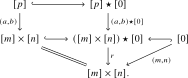

We now internalize the construction of the simplices from Section 3.6, using the natural numbers.
10.4.1 The simplex functor
Construction 10.4.1. Consider the functor \[ - \star [0]\colon \Cat \to \Cat, \qquad C \mapsto C \star [0] \] together with the empty object \(\emptyset : \Cat\). By iterating, we obtain a functor \([-]\colon \N \to \Cat\), sending \(n : \N\) to a category \([n]\) defined by the formula \[ [0]=\emptyset\star[0]\quad\text{and}\quad [n+1]=[n]\star[0]\quad\text{for $n : \N$.} \]
Proposition 10.4.2 (Cancellation after adjoining a cone point). For any posets \(C\) and \(D\), the rule \(\varphi\mapsto\varphi\star\id_{[0]}\) defines an equivalence \[ \Equiv(C,D)\iso\Equiv(C\star[0],D\star [0])\, . \]
Proof
Let \(\psi\colon C\star[0]\iso D\star[0]\) be an equivalence. The cone point is terminal by Lemma 10.3.4, and terminal objects form a contractible anima. Hence \(\psi\) carries the cone point to the cone point.
Recall from Proposition 3.6.9 that we have \[ C^\simeq\sqcup[0]=(C\star[0])^\simeq\, . \] Since coproducts of categories are universal, \(\psi\) carries the complementary summand \(C^\simeq\) onto \(D^\simeq\). Equivalently, an old object cannot be sent to the cone point: the cone point admits no morphism to an old object, whereas an equivalence preserves the terminal cone point. Since \(C\) is a full subcategory of \(C\star[0]\), the functor \(\psi\) restricts to a fully faithful functor from \(C\) to \(D\). Applying the same argument to an inverse of \(\psi\) shows that this restriction is an equivalence: \[ \psi_{|C}\colon C\iso D \] Since functors between posets are determined by their values on objects by Lemma 10.3.7, restriction and adjoining a cone point are inverse as maps of animae. This proves the asserted equivalence.
Theorem 10.4.3 (Rigidity of the simplices). The functor \([-]\colon \N \to \Cat^{\simeq}\) is an embedding.
Proof
Since every simplex and the empty category are posets, Proposition 10.4.2 gives equivalences, for all \(m,n:\N\), \[ \Equiv([m+1],[n+1])\simeq\Equiv([m],[n]). \] Taking one of the two posets to be empty also gives \begin{align*} \Equiv([m+1],[0])&\simeq\Equiv([m],\emptyset)\simeq\emptyset,\\ \Equiv([0],[n+1])&\simeq\Equiv(\emptyset,[n])\simeq\emptyset, \end{align*} since every simplex has a cone point and is therefore nonempty. Finally, \(\Equiv([0],[0])\) is contractible. Double induction shows that \(\Equiv([m],[n])\) is contractible when \(m=n\) and empty otherwise.
Since \(\N\) is a set with decidable equality, the identity anima \(m=n\) has the same description. Consequently, the canonical map \[ (m=n)\longrightarrow\Equiv([m],[n]) \] is an equivalence for every \(m,n:\N\). The fiberwise characterization of embeddings now proves the claim.
Definition 10.4.4 (Simplex category). We define the simplex category \[ \simp \subseteq \Cat \] as the full subcategory of \(\Cat\) whose object anima is the image of the embedding \([-]\colon\N \hookrightarrow \Cat^\simeq\). Given a category \(C\), a functor \(F\colon \simp\catop \to C\) is called a simplicial object of \(C\). We write \(\s C := \Fun(\simp\catop,C)\) for the category of simplicial objects in \(C\).
10.4.2 Geometric realization
Definition 10.4.5 (Geometric realization). For a simplicial object \(X_{\bullet}\colon \simp\catop \to C\), we define its geometric realization \(\abs{X_{\bullet}}\) as \[ \abs{X_{\bullet}} := \colim_{[n] \in \simp\catop} X_n, \] whenever this colimit exists in \(C\).
Proposition 10.4.6 (Cosiftedness of simplex category). The diagonal functor \(\delta\colon \simp \to \simp \times \simp, [n] \mapsto ([n],[n])\) is an initial functor.
Proof
Let \(m,n \in \N\) be two natural numbers. By Corollary 9.5.7, we have to show that the slice category \[ \simp_{/([m],[n])} = \simp \times_{\simp \times \simp} (\simp \times \simp)_{/([m],[n])} \] is weakly contractible. The forgetful functor \(\simp_{/([m],[n])} \to \simp\) is a right fibration, hence there exists a pullback square The classifying presheaf of this right fibration has value at \([p]\) equal to \[ \Hom_\simp([p],[m])\times\Hom_\simp([p],[n]). \] It is therefore the product \(\simp^m\times\simp^n\) of the presheaves represented by \([m]\) and \([n]\).
Since \(- \star [0] \colon \Cat \to \Cat\) preserves simplices by definition, it restricts to an endofunctor on \(\simp\), hence we may consider the maps \[ \id_{\simp} \to (-) \star [0] \leftarrow \const_{[0]} \] of endofunctors of \(\simp\).
Now consider the product \([m] \times [n]\) in \(\Cat\). The simplicial presheaf
\([p]\mapsto\Map([p],[m]\times[n])\) is canonically the product
\(\simp^m\times\simp^n\). The inclusion
\[
[m] \times [n] \hookrightarrow ([m] \times [n]) \star [0]
\]
admits a right adjoint
\[
r\colon ([m] \times [n]) \star [0] \to [m] \times [n]
\]
satisfying \(r(a,b) = (a,b)\) for \((a,b) \in [m] \times [n]\) and \(r(0) = (m,n)\). Thus, given a functor \((a,b)\colon [p]\to [m]\times[n]\), we may consider

Corollary 10.4.7. The functor \(\delta\catop\colon \simp\catop \to \simp\catop \times \simp\catop\) is a terminal functor.
Thus \(\simp\catop\) is sifted. We obtain the following consequences for geometric realization.
Corollary 10.4.8 (Diagonal realization). Let \(C\) admit geometric realizations, and let \(\Phi\colon\simp\catop\times\simp\catop\to C\) be a functor. Then the following colimits exist and the diagonal induces an equivalence \[ \colim_{[n] \in \simp\catop} \Phi_{n,n} \iso \colim_{([m],[n])\in \simp\catop \times \simp\catop} \Phi_{m,n}. \]
Proof
The iterated geometric realization exists and computes the colimit over \(\simp\catop\times\simp\catop\), by the universal property of colimits. The assertion follows from terminality of the diagonal, Corollary 10.4.7.
Proposition 10.4.9 (Geometric realization and finite products). Let \(C\) be a category admitting geometric realizations and finite products, and assume that the functor \(- \times -\colon C \times C \to C\) preserves geometric realizations in both variables. Then the colimit functor \(\abs{-}\colon \Fun(\simp\catop, C) \to C\) preserves finite products.
Proof
Since \([0]\) is terminal in \(\simp\), the anima \(\Pi_\infty(\simp\catop)\) is contractible. Thus the constant terminal simplicial object has terminal realization. It remains to check binary products. For simplicial objects \(X,Y\colon\simp\catop\to C\), the box product \(X \boxtimes Y\colon \simp\catop \times \simp\catop \to C\) is the composite \[ \simp\catop \times \simp\catop \xrightarrow{X \times Y} C \times C \xrightarrow{- \times -} C. \] By Corollary 10.4.8, we have \[ \abs{X \times Y} \simeq \colim_{[n] \in \simp\catop} (X \boxtimes Y)_{n,n} \simeq \colim_{([m],[n]) \in \simp\catop \times \simp\catop} X_m \times Y_n. \] Since for a fixed object \(T\) of \(C\), the functor \(T \times - \colon C \to C\) preserves geometric realizations by assumption, we get \[ \colim_{([m],[n]) \in \simp\catop \times \simp\catop} X_m \times Y_n \simeq \colim_{[m] \in \simp\catop} X_m \times \colim_{[n] \in \simp\catop} Y_n = \abs{X} \times \abs{Y}, \] as desired.
10.4.3 Split simplicial objects
A split simplicial object has an extra degeneracy, including a section of its augmentation. Its realization is preserved by every functor. To keep all the compatibilities in this condition, we describe it using an indexing category.
Let \(\simp_{-\infty}\) be the category whose objects are the symbols \([n]\) for \(n\geq-1\) and whose morphisms \([m]\to[n]\) are the order-preserving maps \[ \{-\infty\}\sqcup[m]\longrightarrow\{-\infty\}\sqcup[n] \] that preserve \(-\infty\). There are inclusions \(\simp\subseteq\simp_+\subseteq\simp_{-\infty}\), where a morphism belongs to \(\simp_+\) precisely when the inverse image of \(-\infty\) is \(\{-\infty\}\).
Definition 10.4.10 ([Lur17, Definition 4.7.2.2]). An augmented simplicial object \(X\colon\simp_+\catop\to C\) is split if it extends to a functor \(\simp_{-\infty}\catop\to C\). A simplicial object is split if it extends to a split augmented simplicial object.
Lemma 10.4.11 (Absolute realization of split simplicial objects). Every split augmented simplicial object is a colimit diagram. In particular, every split simplicial object admits a geometric realization, and every functor preserves this realization.
Proof
The inclusion \(j\colon\simp\to\simp_{-\infty}\) has a right adjoint: forget the distinguished point of \(\{-\infty\}\sqcup[n]\) and regard the underlying ordered set as \([n+1]\). Indeed, a morphism from \(j([m])\) to \([n]\) in \(\simp_{-\infty}\) is precisely a monotone map from \([m]\) to this underlying ordered set. This identification is natural.
Consequently, \(j\catop\) is a right adjoint and hence terminal by Proposition 9.1.12. The object \([-1]\) is terminal in \(\simp_{-\infty}\catop\), so the colimit of an extension to that category is its value at \([-1]\). Restriction along \(j\catop\) has the same colimit, which proves the first assertion. Every functor preserves the extension and its augmentation, so it also preserves this realization.